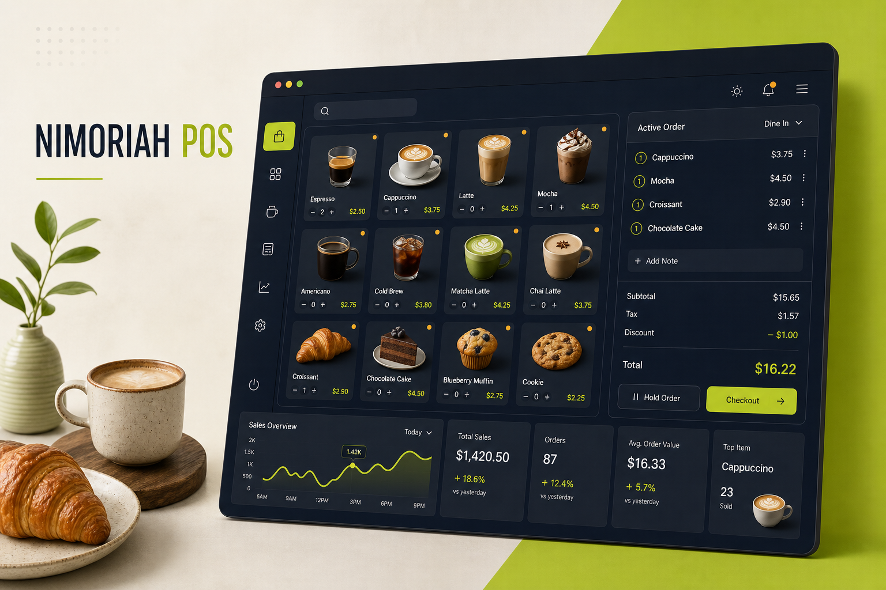
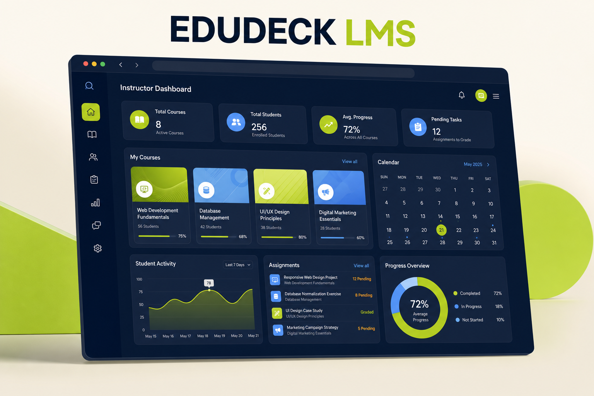
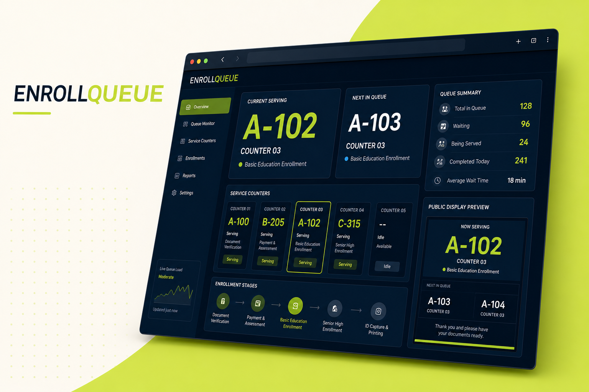
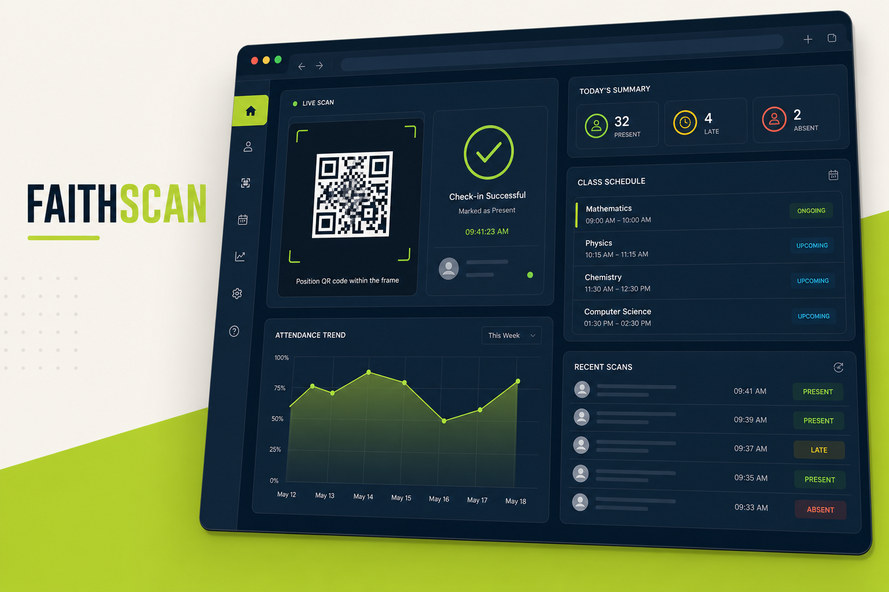

Thoughtful UX
Clear interfaces designed around real people and real workflows.
Full-stack engineer · Mobile developer · IT instructor
Hi, I'm Mark—a software engineer from Batangas who turns complex ideas into reliable, user-friendly web and mobile experiences.
About me
I design and develop practical software for the web and mobile—from the interface people see to the systems working behind it.
My background combines hands-on software engineering with classroom experience. That means I care not only about writing clean code, but also about explaining decisions, collaborating clearly, and building solutions people can confidently use.
Today, I work with modern frameworks including Laravel, React, Kotlin, and ASP.NET while mentoring future developers as an IT instructor.
Clear interfaces designed around real people and real workflows.
Maintainable foundations that perform well and scale with the product.
Good software starts with good communication—from discovery to delivery.
What I do
I cover the core layers needed to turn an idea into a polished, usable product.
Responsive websites and full-stack applications built for clarity, speed, and long-term maintainability.
Purposeful mobile experiences with intuitive flows, dependable integrations, and a strong technical core.
Secure APIs, databases, and business logic that keep products connected and dependable behind the scenes.
Selected work
A selection of full-stack products spanning retail operations, education, enrollment services, and attendance management.

01Retail technology · 2026
A complete café point-of-sale platform for fast transactions, held orders, shift management, stock adjustments, expenses, refunds, and business reporting.

02Education platform · 2026
A role-based learning management system for administrators, faculty, and students, including classes, enrollment, academic setup, reports, and audit trails.

03Campus operations · 2026
A multi-stage college enrollment queuing system with digital tickets, live counter operations, public displays, analytics, audit trails, and native reports.

04Attendance technology · 2026
A QR-powered student attendance system with academic setup, scheduled class scanning, student QR cards, Excel import, live attendance, and PDF/XLSM/CSV exports.
Project cover visuals are portfolio presentations based on each system's implemented features.
Experience
STI · Tanauan City, Batangas
I teach mobile and web systems development, integrative programming, advanced system integration, Python, computer graphics, and HCI through hands-on, project-based learning.
Laguna
Contributed across design and development to deliver user-centered mobile and web applications, with a focus on quality, accuracy, and dependable implementation.
Graduate Studies
Currently pursuing advanced studies in information technology, strengthening expertise in modern computing, systems development, research, and technology-driven solutions.
Polytechnic University of the Philippines · Sto. Tomas
Built a strong foundation in software engineering, systems analysis, database design, and modern application development.
Continuous learning
Selected workshops and certifications across web engineering, cloud, AI, enterprise systems, and programming.
STI
Colegio de San Juan de Letran
University of Perpetual Help
Styava.dev
Microsoft
STI
Flexsource IT
Google Developer Student Clubs · PUP Sto. Tomas
Let's work together
Tell me about your project, collaboration, or opportunity. I'll get back to you as soon as I can.